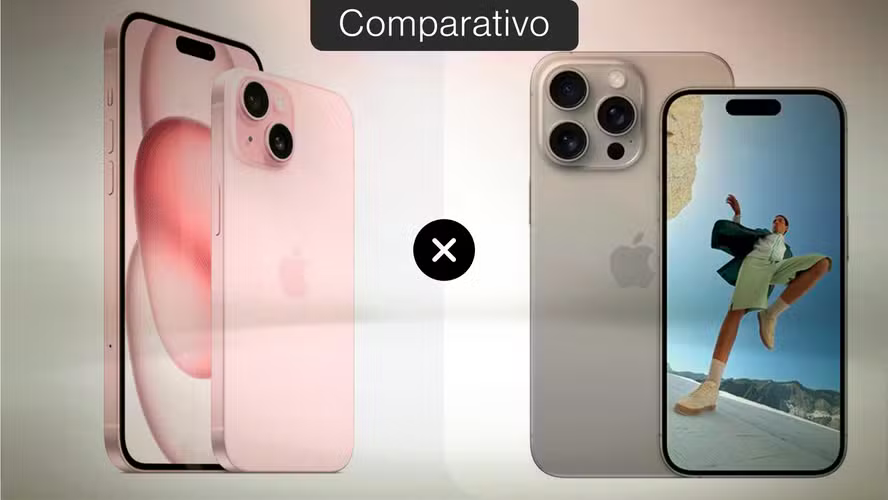
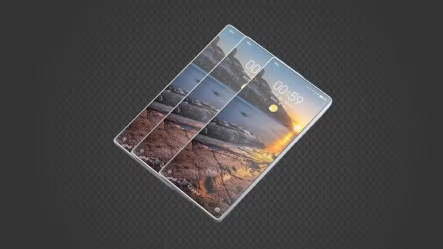

iPhone 15 vs iPhone 15 Pro: saiba o que muda entre celulares
Postado 04 outubro 2024

Apesar de semelhanças, iPhone 15 e iPhone 15 Pro diferem em pontos fundamentais, como processamento
e câmera; veja o comparativo entre os celulares e saiba qual comprar
Leia mais
Celular com 3 telas? Xiaomi deve lançar 2 'dobráveis triplos' até 2026
Postado 04 outubro 2024

Smartphones foram registrados no sistema de certificação internacional IMEI e têm previsão de
lançamento em março de 2025 e janeiro de 2026, respectivamente; conheça
Leia mais